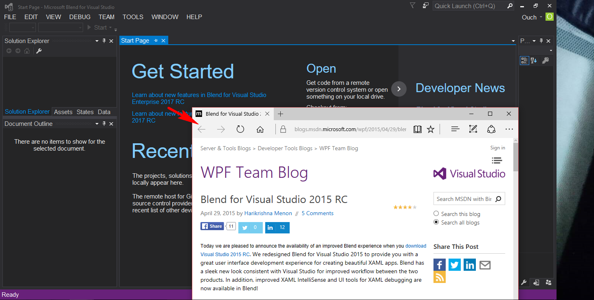

在 2016 年的 11月，微軟藉由 Connect 大會發佈了”地表最強開發工具” Visual Studio 2017 的 RC (發行候選)版本。
Visual Studio 2017 支援的平台和相容性可以參考 這個連結
這個版本的 Visual Studio 不支援 Silverlight 專案。 若要維護 Silverlight 應用程式，請繼續使用 Visual Studio 2015。
這個版本不支援 Windows 市集 8.1 和 8.0 以及 Windows Phone 8.1 和 8.0 專案。 若要維護這些應用程式，請繼續使用 Visual Studio 2015。 若要維護 Windows Phone 7.x 專案，請使用 Visual Studio 2012。已哭…
如果沒什麼意外的話，應該在接下來的一兩個月裡面，我們就可以看到正式版出現了。
在正式版出現之前，先用相對穩定的 RC 版來熟悉一下之後將要使用的工具是蠻值得一試的一件事。
接下來就各位分享一下安裝和試用的心得。
##下載
首先，這次釋出的 RC 版和之前的版本有些不同，在官網上並沒有官方的 ISO 檔可供下載，也沒有官方的離線安裝檔，只有線上安裝檔可供下載。
下載連結如下：
Visual Studio Community 2017 RC
Visual Studio Professional 2017 RC
Visual Studio Enterprise 2017 RC
雖然說官方並不提供離線安裝檔，但還是很佛心的寫了一篇文章教我們怎麼製作離線安裝檔。
##安裝
接下來，就安裝 Enterprise 版來體驗一下吧!!
打開安裝檔之後，出現的是和以往截然不同設計的版權聲明畫面。 [
按下同意按鈕的話，就會出現如下的畫面。(注意：安裝之前請先關閉其它版本的 Visual Studio ，否則可能會因為衝突而無法繼續安裝。)
[
和之前的版本有很大差異的地方是，這次的版本所有的功能都是以模組化的方式在 Workloads 頁籤中選擇是否要進行安裝。 如果所有項目都不勾選，只安裝核心的編輯功能的話，大約會佔用 740 MB 的磁碟空間。
眼尖的朋友們可能會發現畫面上有一個 Installation nickname 的文字輸入欄位，那是因為 Visual Studio 2017 支援不同版本共存，所以可以透過它來自訂開始功能表上顯示的名稱，例如 VS2017 Ent RC。
在 Individual components 頁籤中可以針對細項進行微調。
[
也可以在 Language packs 頁籤中選取想安裝的語言包。 [
若選取 Universal Windows Platform development、.NET desktop development 、Web development 和 Mobile development with .NET (Preview) 這幾個項目的話，則會佔用 19.76 GB 的磁碟空間。
另外發現一個好玩的點，如果按下 Esc 鈕的話，還可以選擇不同的版本來安裝(所以不同版本的安裝檔只是預先幫我們選好該版本的意思?)。 [
為了省硬碟，我就以上述的項目直接進行安裝啦。安裝畫面如下(看到下面還有兩個 Install 鈕可以按，讓我很好奇，難道可以同時安裝不同的版本嗎!?答案是不行…)：
[
若想以其它語系進行安裝的話，可以透過命令提示視窗執行安裝檔，在後方加入 –locale 參數並且指定語系。 如 vs_Enterprise.exe –locale zh-TW ，就可以用中文模式進行安裝。
目前支援的語系有 zh-CN, zh-TW, cs-CZ, en-US, fr-FR, de-DE, it-IT, ja-JP, ko-KR, pl-PL, pt-BR, ru-RU, es-ES, and tr-TR
安裝完成之後，會需要重新開機。
[
##心得
依照我選擇的功能，整個安裝的過程大約花了一個小時出頭，還包含各功能模組的下載時間，整個安裝的體驗比之前的版本要來得流暢許多。
首先，吸引到我眼球的是 Visual Studio 2017 的 Logo。新版 Logo 的莫比烏斯環看起來很明顯的比 Visual Studio 2015 的來得瘦了不少，不知道是不是有想要隱喻安裝所需要的硬碟空間變小的意味?變瘦的莫比烏斯環看起來也有比較敏捷的感覺。
[
再來，Visual Studio 2017 RC 開啟的速度也很明顯的比 Visual Studio 2015 快了許多(不知道是不是因為還沒裝什麼擴充功能的關係?)，大概差了有十秒以上。
而且整個開始畫面也和 Visual Studio 2015 有蠻明顯的差異，資訊和每個項目之間的間距拉大了，看起來比較沒有壓迫感。 [
建立新專案時對話視窗的專案分類也和 Visual Studio 2015 有蠻大的差異，因為支援的專案類型變少了的關係，所以分類看起來也更加的簡潔了不少。
不過我一直很期待看到的 UWP 懶人專案樣版還是沒有出現…
[
關於 Blend for Visual Studio 2017 RC 呢… 連開始畫面裡面的內容和連結都還是連到 2015 版的網頁(不過畫面上的確是寫著 2017 啦)… 嗯~就之後再觀查看看囉!! [
以上是我簡短的安裝心得，有興趣的朋友也不妨安裝玩玩吧。